Appendix#
Data construction#
Total available area#
To compute \(\bar z^i\), the amount of available area for the planner’s choice (forest or cattle farming) in each site \(i\), we first calculate the fraction of 30m-pixels in site \(i\) classified as agriculture (crops + pastures) or forests in MapBiomas 2017 Souza Jr et al. [2020]. We then multiply this fraction by the area (within the biome) of the site, to obtain a measure in hectares. Notice \(\bar z^i\) comprises the total site area, excluding areas such as rivers, roads, cities and etc.
Carbon absorption#
We first extract a random sample of 1.2M 30m-pixels and select 893,753 pixels with no deforestation during 1985-2017, which we treat as primary forests as of 2017. We add above ground biomass density data for the year 2017 from ESA Biomass[2]. The biomass data also comes in a grid format with \(\sim\) 100m resolution, so we spatially match it to our sample. The original data is measured in biomass density (Mg per ha) but we convert it to carbon per hectare, by dividing by 2 (carbon is approximately 50% of the biomass), and then obtain CO2 equivalent by multiplying by 44 and dividing by 12 (based on atomic mass). In Appendix C we exposit how we use the data to obtain a baseline distribution of the vector of site-specific carbon absorption productivities, \((\gamma^1, \dots, \gamma^I).\)
Carbon depreciation#
The parameter \(\alpha\) is a carbon depreciation parameter, assumed to be constant across sites. It is set so that the 99% convergence time of the carbon accumulation process is 100 years (see Heinrich et al. [2021]), that is \(\alpha=1-(1-0.99)^{1/100}=.045\).
Emissions contributed by agriculture#
The parameter \(\kappa\) is calibrated using the agricultural net annual emission data at the state level available from the system SEEG.[3] We use \(\kappa=2.0942,\) which is the average of agricultural net emission divided by the agricultural area from MapBiomas for all states within the Amazon biome, weighting by the area of each state overlap with the biome, from 1990 to 2019.
Cattle farming productivities#
Since almost \(90\%\) of the historically deforested land in the Amazon biome that was used for agricultural activities in 2017 was used for pasture, we focus on the productivity of cattle farming for each site. Since we do not have measurements concerning the cost of attracting or redeploying variable inputs to the cattle farming sector, we focus on revenue per hectare. This choice leads to an overvaluation of the contribution of cattle farming in the Amazon to the Brazilian economy.[4] We consider the value of cattle sold for slaughter per hectare of pastureland at the municipal level, from the 2017 Agricultural Census IBGE [2017]. In Appendix C we exposit how we derive a baseline distribution for the vector of site-specific cattle farming productivities, \((\theta^1, \dots, \theta^I).\)
Discount rate (\(\delta\)) and adjustment costs cost (\(\zeta\))#
We use the discount rate \(\delta = 0.02\) and calibrate \(\zeta=1.66e-4\) using the difference in price between forested land and cleaned land and the amount of annual deforestation that occurred from 2008 to 2017 based on Araujo et al. [2022]. Notice that the difference in price should reflect both the cost of deforestation and any value of wood obtained in the process. Unfortunately, we did not have data that would allow us to compute a separate adjustment cost for decreasing (as opposed to increasing) deforestation, so we opted for symmetry.
Initial values: \(Z^i_0\), \(X^i_0\)#
The approach for computing the initial value for the agricultural area, \(Z^i_0\), is similar to that used for the total available area \(\bar Z^i\). The only difference is that we focus only on the fraction of pixels classified as agriculture (crops + pastures) in 2017 before multiplying by the site’s area in order to obtain a measure in hectares.
The initial value for the carbon stored in the forests \(X^i_0\) is assumed to be given by \(X^i_0=\gamma^i (\bar{Z}^i - Z^i_0)\), i.e., the carbon stock per hectare of forest times the forest area. Notice that \(X^i_0\) is measured in CO2e (Mg). Notice that we assume that all forest at the initial point is primary, which is compatible with equation (2).
Agricultural prices#
We use a data series on monthly deflated cattle prices (reference date 01/2017),[5] from 1995, the year in which the Real Plan stabilized the Brazilian currency, until 2017.
For the model inputs, we fit a two-state Markov process as a hidden state Markov chain with with Gaussian noise. We estimated two versions of this model using the hmmlearn package in python. This package provides a collection of software tools for analyzing Hidden State Markov Models. In estimation, the hidden states were initialized in the implied stationary distribution of the transition probabilities through an iterative process. The implied calibration we used for results reported in the main body of the paper allowed for the normally distributed variances to be different depending on the state. We also considered a specification in which the variances are the same. The state realizations and transition probabilities for the two specifications are given in Table Estimates for the hidden-state Markov models.
The smoothed probabilities for both models are given in Figure 15. The more constrained estimation picks lower values for both states but assumes the process spends most of its time the higher of the two state.
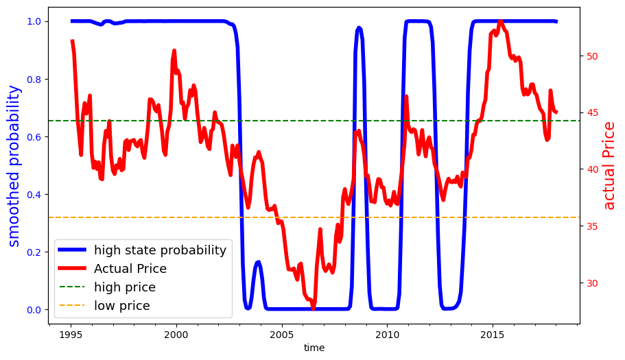 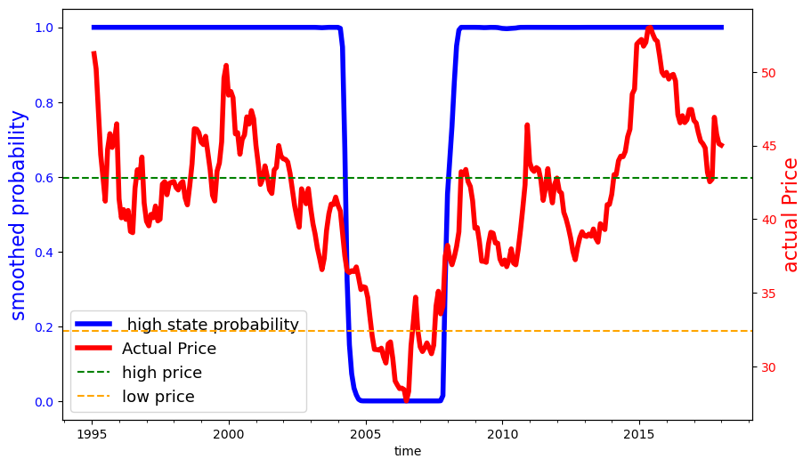
Fig 15: Smoothed probabilities for the two hidden state Markov chain
models
{kind=link}
{kind=link}
Table Likelihood ratios and information criteria reports the likelihoods and AIC and BIC model selection diagnostics for both models. The AIC criterion picks the less constrained of the two models and the BIC criterion just the opposite.
distinct variances |
common variance |
|
|---|---|---|
log likelihood |
270.16 |
268.04 |
aic |
-528.32 |
-526.08 |
bic |
-502.97 |
-504.36 |
In Table Present-value decomposition with stochastic agricultural prices, we report the counterpart to Table Present-value decomposition with stochastic agricultural prices constructed using the implied calibration the same variances for each state. The differences between results are modest.
agricultural output value |
net Transfers |
forest Services |
adjustment Costs |
planner Value |
|
|---|---|---|---|---|---|
\(p^a\) = |
stochastic |
||||
b = $0 |
|||||
10% |
3.22 |
0.00 |
-1.01 |
0.05 |
2.19 |
50% |
3.34 |
0.00 |
-1.00 |
0.05 |
2.29 |
90% |
3.43 |
0.00 |
-0.97 |
0.05 |
2.37 |
b = $15 |
|||||
10% |
0.24 |
2.00 |
0.84 |
0.19 |
2.89 |
50% |
0.26 |
2.00 |
0.84 |
0.19 |
2.91 |
90% |
0.26 |
2.00 |
0.84 |
0.19 |
2.91 |
b = $25 |
|||||
10% |
0.16 |
3.48 |
0.96 |
0.27 |
4.33 |
50% |
0.18 |
3.48 |
0.96 |
0.28 |
4.34 |
90% |
0.19 |
3.48 |
0.96 |
0.28 |
4.35 |
\(p^a\) = |
$41.1 |
||||
b = 0 |
3.31 |
0.00 |
-1.10 |
0.06 |
2.14 |
b = 15 |
0.26 |
2.02 |
0.95 |
0.17 |
3.06 |
b = 25 |
0.17 |
3.54 |
1.00 |
0.26 |
4.45 |
(appen:transfer)
Transfer costs#
In this subsection we report in Table Transfer costs under ambiguity - 15 years and Table Transfer costs under ambiguity - 30 years transfer costs under ambiguity aversion and Table Transfer costs with stochastic agricultural prices transfer costs under stochastic variation in agricultural prices.
ambiguity neutral |
ambiguity aversion |
||||||
|---|---|---|---|---|---|---|---|
b |
net captured emissions |
discounted net transfers |
discounted effective cost |
net captured emissions |
discounted net transfers |
discounted effective cost |
|
0 |
-9.89 |
0.00 |
NaN |
-9.59 |
0.00 |
NaN |
|
10 |
5.17 |
0.43 |
2.87 |
4.24 |
0.35 |
2.55 |
|
15 |
6.69 |
0.84 |
5.08 |
5.63 |
0.70 |
4.65 |
|
20 |
7.65 |
1.29 |
7.36 |
6.47 |
1.08 |
6.77 |
|
25 |
8.21 |
1.74 |
9.60 |
6.97 |
1.47 |
8.88 |
ambiguity neutral |
ambiguity aversion |
||||||
|---|---|---|---|---|---|---|---|
b |
net captured emissions |
discounted net transfers |
discounted effective cost |
net captured emissions |
discounted net transfers |
discounted effective cost |
|
0 |
-15.25 |
0.00 |
NaN |
-15.08 |
0.00 |
NaN |
|
10 |
11.91 |
0.87 |
3.21 |
10.18 |
0.74 |
2.93 |
|
15 |
14.10 |
1.57 |
5.37 |
12.57 |
1.39 |
5.03 |
|
20 |
14.75 |
2.23 |
7.43 |
13.15 |
1.97 |
6.97 |
|
25 |
15.08 |
2.87 |
9.47 |
13.29 |
2.51 |
8.86 |
15 years |
30 years |
|||||
|---|---|---|---|---|---|---|
net captured emissions |
discounted net transfers |
discounted effective cost |
net captured emissions |
discounted net transfers |
discounted effective cost |
|
(billion tons of CO2e) |
($ \( 10^{11}\)) |
($ per ton of CO2e) |
(billion tons of CO2e) |
($ \( 10^{11}\)) |
($ per ton of CO2e) |
|
\(p^a\) = |
stochastic |
|||||
b=$0 |
||||||
10% |
-9.28 |
0.00 |
NaN |
-14.41 |
0.00 |
NaN |
50% |
-8.52 |
0.00 |
NaN |
-13.79 |
0.00 |
NaN |
90% |
-7.82 |
0.00 |
NaN |
-13.33 |
0.00 |
NaN |
b=$15 |
||||||
10% |
6.22 |
0.77 |
4.91 |
13.89 |
1.53 |
5.41 |
50% |
6.25 |
0.77 |
5.21 |
13.91 |
1.53 |
5.53 |
90% |
6.29 |
0.78 |
5.43 |
13.94 |
1.54 |
5.62 |
b=$25 |
||||||
10% |
7.61 |
1.59 |
9.27 |
14.78 |
2.78 |
9.49 |
50% |
7.63 |
1.60 |
9.78 |
14.79 |
2.78 |
9.70 |
90% |
7.65 |
1.60 |
10.14 |
14.81 |
2.78 |
9.86 |
\(p^a\) = |
$41.1 |
|||||
b=0 |
-9.89 |
0.00 |
NaN |
-15.25 |
0.00 |
NaN |
b=15 |
6.69 |
0.84 |
5.08 |
14.10 |
1.57 |
5.37 |
b=25 |
8.21 |
1.74 |
9.60 |
15.08 |
2.87 |
9.47 |
Catalog of the sites#
Figure 16 lists the site numbers in the Amazon map as a reference.
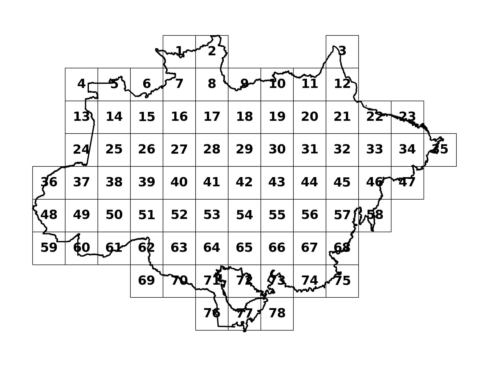
{kind=link}
Fig 16: Locations of the different site numbers
Alternative values of \(\xi\)#
In this section, we report results for parameter uncertainty with \(\xi=2\). The calculated business as usual price is $6.1. Table Present-value decomposition - parameter ambiguity \xi=2 shows the present values under \(\xi=2\) in comparison to \(\xi=\infty\). Figure [17](#fig:Ambiguity adjustment_b0) and Figure [18](#fig:Ambiguity adjustment_b15) shows the baseline and ambiguity-adjusted distributions.
agricultural output |
planner value |
|||||
|---|---|---|---|---|---|---|
b |
\(\xi=\infty\) |
\(\xi=2\) |
\(\xi=1\) |
\(\xi=\infty\) |
\(\xi=2\) |
\(\xi=1\) |
0 |
3.31 |
2.87 |
2.57 |
2.14 |
1.86 |
1.64 |
10 |
0.41 |
0.50 |
0.55 |
2.41 |
2.22 |
2.08 |
15 |
0.26 |
0.28 |
0.30 |
3.06 |
2.81 |
2.62 |
20 |
0.20 |
0.22 |
0.23 |
3.75 |
3.43 |
3.19 |
25 |
0.17 |
0.18 |
0.19 |
4.45 |
4.06 |
3.74 |
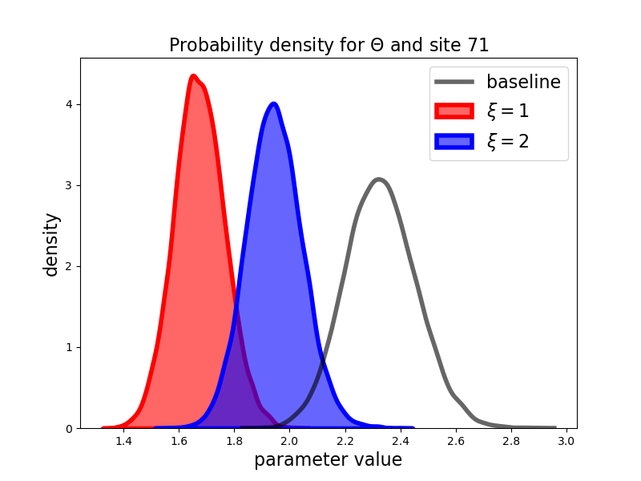 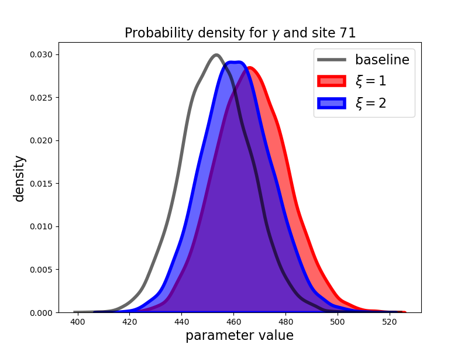
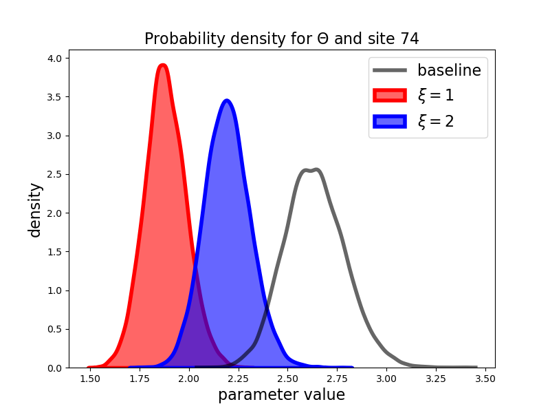 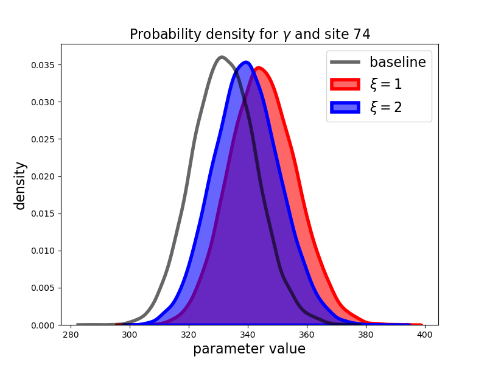
Fig 17: Baseline and ambiguity adjusted densities for b = 0
{kind=link}
{kind=link}
{kind=link}
{kind=link}
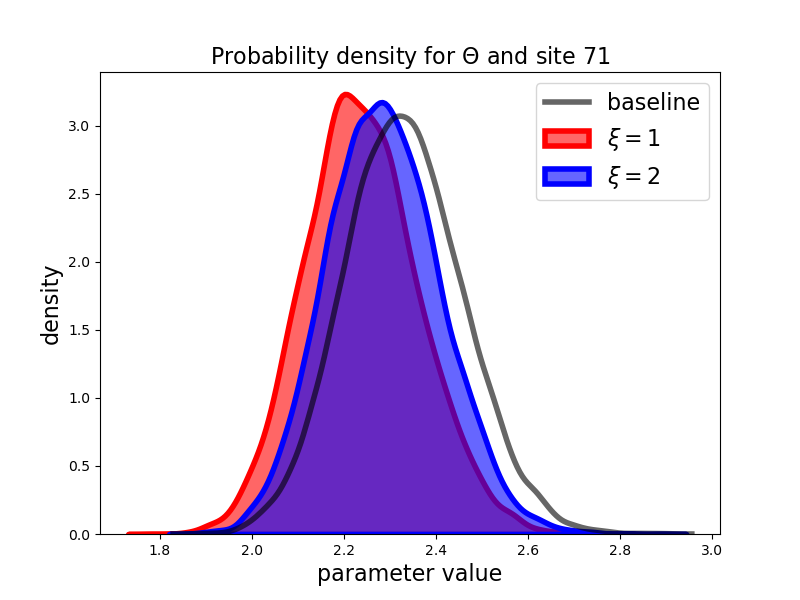 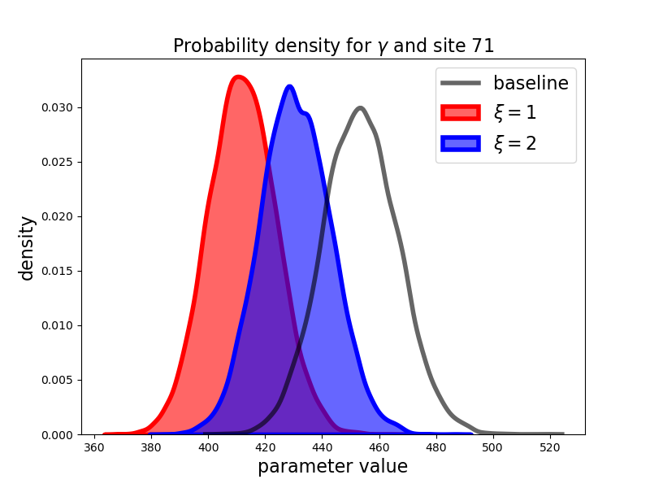
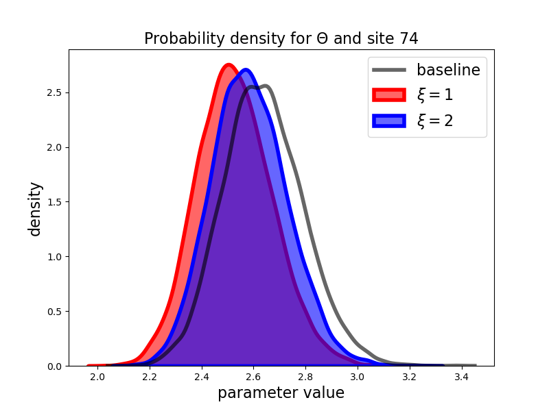 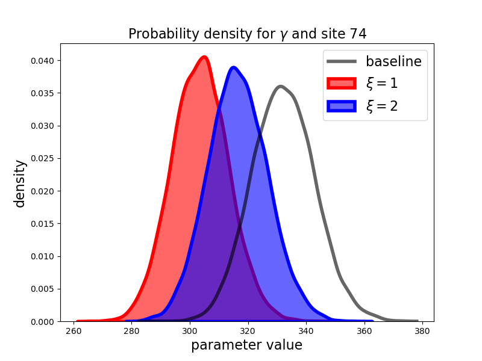
Fig 18: Baseline and ambiguity adjusted densities for b = 15
{kind=link}
{kind=link}
{kind=link}
{kind=link}
(appen:discrete_model)
Model discretization#
In order to obtain numerical solutions for the social planner problem, we solve the following discrete-time approximation, for a finite horizon of \(T=200\) years[6]:
subject to the initial conditions in A.7 and the constraints:
Benchmark distributions#
Equation (6){reference-type=”ref” reference=”productivity_construct”} gave the formula for constructing measurement of site-specific productivities from regression coefficients and measurements of municipality attributes. In what follows, we first outline the municipality regression models used for \(\gamma\) and \(\theta\), and then we describe the procedure that we used constructing baseline Bayesian posteriors for the regression coefficients.
\(\theta's\)#
To construct a measurement of the \(\theta\)’s, we run the regression specification below with probabilistic output.[7] $\(\label{eq:betathetamuni} \log(\text{Slaughter value}) = R_\theta \beta_\theta + \epsilon_\theta\)\( where \)$\begin{aligned} R_\theta \beta_\theta \mathrel{\overset{\mathrm{def}}{=}}& \quad \beta_\theta^{0} + \beta_\theta^{1}(\operatorname{historical_precip})
\beta_\theta^{2}(\operatorname{historical_temp}) + \beta_\theta^{3}(\operatorname{historical_temp^2})\cr & \quad + \beta_\theta^{4}(\operatorname{lat}) + \beta_\theta^{5}(\operatorname{lat^2}) + \beta_\theta^{6}\operatorname{\text{log}(cattleSlaughter_farmGatePrice}) + \beta_\theta^{7}(\operatorname{distance}) \end{aligned}$$ where slaughter value is the value of cattle sold per hectare of pasture area in 2017 (USD/ha), precipitation and temperature are the average annual precipitation (mm) and temperature (degrees Celsius), respectively, for the period of 1970-2000 Fick and Hijmans [2017], latitude is the geographical coordinates of the municipality centroids, farm gate price is the price of cattle slaughter SEAB-PR [2021], and distance is measured the distance from the municipality to the state capital. Since the area dedicated to agriculture varies substantially across municipalities, we opted for weighting observations by the 2017 pasture area in each municipality.
The inclusion of farm gate prices on the right side of this regression is reasonable because variations in farm gate prices across municipalities mostly reflect unobserved costs to bring cattle to stockyards and meat to markets such as proximity to roads or rivers, which are not fully controlled by our geographical variables.
\(\gamma's\)#
We calculate average of CO2 density (MG/ha) for each municipality and run the following regression:[8] $\(\operatorname{\text{log}(co2e\_ha)} = R_\gamma \beta_\gamma + \varepsilon_\gamma\)\( where \)$\begin{aligned} R_\gamma \beta_\gamma \mathrel{\overset{\mathrm{def}}{=}}& \quad \beta^\gamma_{0} + \beta^\gamma_{1}(\operatorname{\text{log}(historical_precip}))
\beta^\gamma_{2}(\operatorname{\text{log}(historical_temp})) \cr & \quad \beta^\gamma_{3}(\operatorname{\text{log}(lat)}) + \beta^\gamma_{4}(\operatorname{\text{log}(lon)}). \end{aligned}$$
Posterior estimation#
To estimate the benchmark posterior distribution \(\pi\), we consider \(\pi(\beta_\theta, \sigma^2_\theta)\) and \(\pi(\beta_\gamma, \sigma^2_\gamma)\) separately. Below, we present the derivation of \(\pi(\beta_\theta, \sigma^2_\theta)\), with the derivation of \(\pi(\beta_\gamma,\sigma^2_\gamma)\) following analogously.
Using a weighted regression for the model given by [eq:betathetamuni]{reference-type=”ref” reference=”eq:betathetamuni”} with a Gaussian error term is equivalent to assuming: $\(\label{eq:muni_likelihood} Y_\theta \;=\; R_\theta\beta_\theta + \varepsilon_\theta, \quad \varepsilon_\theta \sim \mathcal{N}(0,\, \sigma_\theta^2 W_\theta ^{-1}),\)\( where: \)W_\theta\( is the diagonal matrix of weights. For the \)\gamma\( case, \)W_\gamma = I.$
We assume that the priors/posteriors for parameters \((\beta_\theta, \sigma_\theta^2)\) are the familiar conjugate form:
If \(\rho:=(\beta, \sigma^2),\) taking logs and multiplying by \(-1\), we get the potential energy term \(\mathcal{U}\):
The HMC algorithm then consists of:
Initialize \(\rho_{(0)}\).
Sample momentum \(\omega_{(0)} \sim N(0,M)\).
Generate a state proposal \((\tilde{\rho}_{(0)}, \tilde \omega_{(0)})\) by evolving its position according to Hamilton’s equations, using the leapfrog integrator with step size \(\epsilon\) and a number of steps \(L\):
\[\begin{split}\begin{aligned} \frac{d \rho}{d t} & = \frac{\partial \mathcal{H}}{\partial \omega} \\[2pt] \frac{d \omega}{d t} & = -\frac{\partial \mathcal{H}}{\partial \rho} \end{aligned}\end{split}\]Perform a Metropolis test to accept or reject the state update \((\rho_{(1)}, \omega_{(1)}) \leftarrow (\tilde{\rho}_{(0)}, \tilde \omega_{(0)})\), with the acceptance probability given by:
\[\min \left\{1, \ \exp \left( \mathcal{H}(\rho_{(0)}, \omega_{(0)}) - \mathcal{H}(\tilde{\rho}_{(0)}, \tilde \omega_{(0)}) \right) \right\}\]Repeat steps 2-4 until the desired number of samples is reached.
We then iterate between solving the planner’s problem for \(d\) and sampling \(\rho\) as follows:
Initialize \(\varphi_{(0)}\) as the transformed mean of the baseline distribution \(\pi\).
Solve the planner’s problem for decision vector \(d_{(0)}\) using the updated parameters.
Sample \(\{ \rho_{(s)} \}^{4000}_{s=1}\) from [eq:target_distribution]{reference-type=”ref” reference=”eq:target_distribution”} by running HMC simultaneously across 4 independent Markov chains, taking 1000 samples and 500 burn-in samples per chain.
Transform samples \(\{ \beta_{(s)} \}^{4000}_{s=1}\) back into the \(\varphi\) space, compute \(\bar{\varphi}\) as the mean across samples, and update \(\varphi\) using \(\varphi_{(t+1)} := w \bar{\varphi} + (1-w) \varphi_{(t)}\), with \(w=0.25\).
Repeat steps 2 – 4 until \(||\varphi_{(t+1)} - \varphi_{(t)} ||_{\infty} < 0.001\).
Computational implementation details#
To sample from [eq:target_distribution]{reference-type=”ref” reference=”eq:target_distribution”}, we rely on the Stan software for high-performance statistical computation. The Stan implementation for HMC makes a few adaptations to the algorithm described above to improve computation speed and sampling efficiency. We summarize these below:
To ensure convergence onto the stationary target distribution, Stan discards the pre-specified number of burn-in samples at the start of the sampling process.
Stan utilizes the No U-turn sampling (NUTS) variant of HMC, which adaptively determines the number of leapfrog steps \(L\) at each iteration to avoid U-turns in the state trajectory .
Stan determines the leapfrog step size \(\epsilon\) using the dual averaging Nesterov algorithm Nesterov [2009].
By default, Stan utilizes a diagonal matrix for \(M\) which is estimated using the burn-in samples collected at the start of the algorithm.
Stan uses reverse-mode automatic differentiation to compute the Hamiltonian gradient. :::